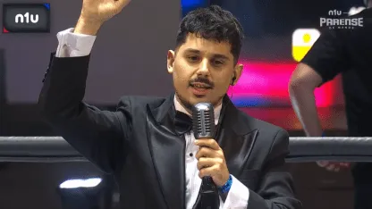
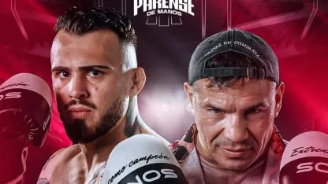
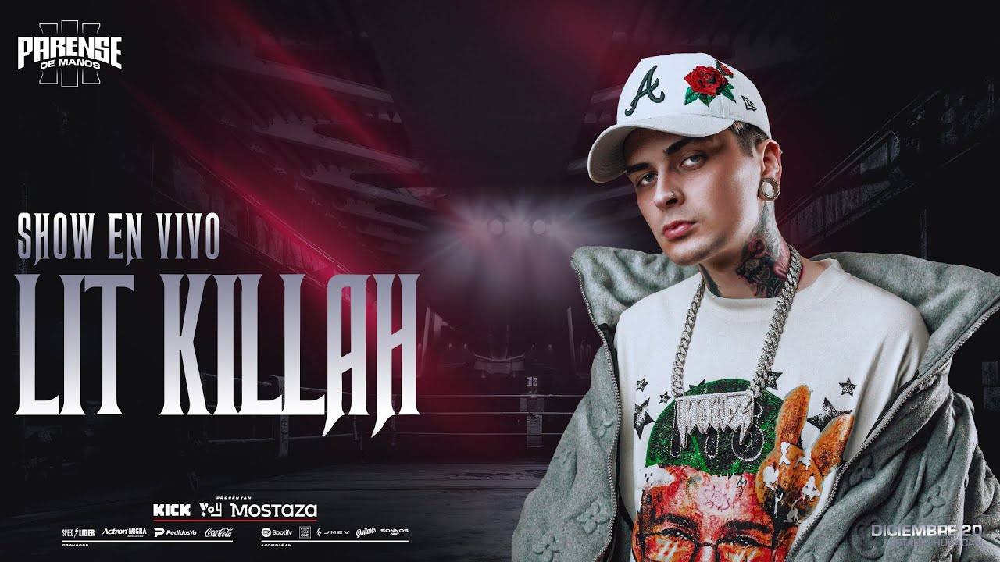

El origen del fenómeno
Párense de Manos es un evento de boxeo aficionado entre streamers, creadores de contenido y celebridades, organizado por Lucas Rodríguez, Germán Beder y Alfredo Montes de Oca, bajo su programa de radio y streaming Paren la mano de Vorterix.

- Inicio: Es realizado anualmente desde 2023
- Formato: Es un evento de boxeo protagonizado mayormente por streamers e influencers.
- Plataforma: Se transmite masivamente a través de la plataforma Kick, y una parte por Telefe. Se distribuyen clips en youtube, instagram, tiktok.
- Estilo: Mezcla combate deportivo real con mucho show y humor.
¿Cómo funciona el evento?
El formato combina el entretenimiento puro con el deporte. Los participantes son personalidades destacadas del mundo del streaming y creadores de contenido, quienes entrenan durante meses para enfrentarse en combates reales sobre el ring. El evento se transmite en vivo, manteniendo la esencia de un espectáculo deportivo profesional pero con el carisma y la dinámica propia de los creadores de contenido.
La experiencia
Más allá de las peleas, Parense de Manos integra shows musicales, invitados especiales y una producción de alto nivel, logrando récords de audiencia y uniendo a toda la comunidad bajo una misma pasión.
Resultó en un evento muy visto entre los jovenes
- En su primer emisión, en 2023, el evento consiguió llegar a +450.000 espectadores en directo
- Mientras que en su segundo año consiguió subir hasta los +620.000 espectadores
- Para cerrar el año pasado 2025 con +750000 espectadores en simultaneo
Quedando en el top 5 de streams con más espectadores en la historia de Kick, mundial
No todo es espectáculo
Aunque el corazón del evento es la participación de figuras de internet, Parense de Manos busca elevar la calidad técnica. Un ejemplo claro fue la participación de Sergio 'Maravilla' Martínez, excampeón mundial, quien no solo aportó su experiencia profesional sino que elevó el nivel competitivo del espectáculo, demostrando el compromiso de la producción por ofrecer un show que respete la disciplina del boxeo.

El proceso de Entrenamiento
La preparación es fundamental: los participantes se someten a meses de entrenamiento intensivo de boxeo, guiados por entrenadores profesionales. Este proceso documental se muestra en el programa diario, permitiendo que la audiencia conecte con el esfuerzo, el miedo y la evolución física de cada competidor, convirtiendo la previa en parte esencial de la narrativa del evento.
El show musical: La unión del deporte y la música
El espectáculo no se limita al cuadrilátero, ya que la música juega un papel fundamental en la atmósfera del evento. En cada edición, el escenario de Parense de Manos se transforma en un festival que acompaña la tensión de las peleas con presentaciones en vivo de artistas destacados de la escena urbana y popular argentina. Figuras como Luck Ra, Tussiwarriors, Homer el Mero Mero, y Lit Killah han formado parte del show, aportando momentos épicos que elevan la energía del estadio y conectan directamente con los gustos musicales de la audiencia, logrando que el evento trascienda lo deportivo para convertirse en un verdadero hito cultural de la música nacional.
